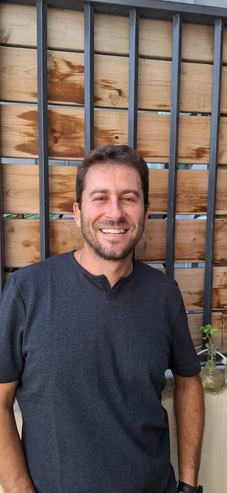

יוני רוזנשטרק
ראש המכינהגדל באפרת, גר בשנים האחרונות בירושלים וכעת בצופר. מגיע מעולמות החינוך וההדרכה. מורה דרך, בעל תואר ראשון ושני בלימודי ארץ ישראל, ולימד בתיכון בירושלים בשבע השנים האחרונות. מאמין בטבע, באנשים וביצירת מרחבי צמיחה והעצמה אישית.